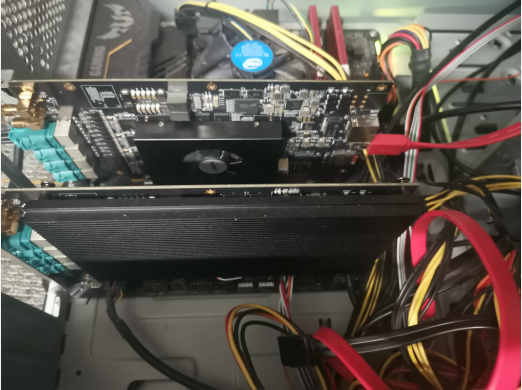
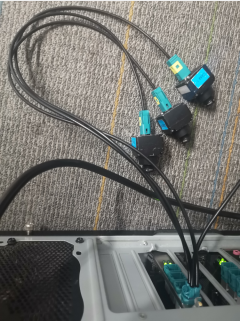
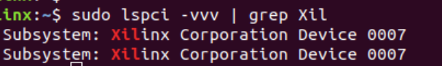
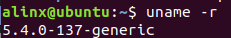
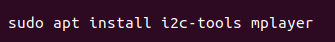
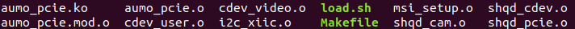
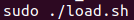

板卡安装与环境配置#
板卡安装#
将采集卡插入到电脑主板的 PCIe 插槽内，确保板卡接触良好、没有松动。支持同时插入多块采集卡。将车载 GMSL 摄像头通过 FAKRA 连接线插入到板卡上的 FAKRA 车规同轴连接口上。
图 2-1 插入板卡
图 2-2 连接摄像头
电脑开机启动，电脑将通过 PCIe 插槽给板卡供电，电脑启动后可在终端输入 sudo lspci -vvv | grep Xil 命令查看系统是否检测到板卡，如果没有任何信息，可能是板卡接触不好，请在主机断电后重新拔插。
图 2-3 板卡信息
系统环境配置#
我们针对不同的 linux 内核版本提供相应的软件及驱动，请用户根据自身的 linux 系统的内核版本将对应的目录拷贝到 linux 系统下，需要确保用户系统的内核版本和我们提供的完全一致。
该产品手册中的操作是在 Ubuntu18 系统下进行的。在 Ubuntu 系统终端中输入 uname–r 命令可以查看 linux 内核的版本。
图 2-4 linux 内核版本
系统软件安装#
如图，在 Ubuntu 系统终端中输入 aptinstall i2c-tools mplayer 命令安装 i2c-tool 和 mplayer 工具软件，其中 i2c-tool 软件是板卡配置软件要用到的工具，mplayer 软件是为了在板卡配 置完成后，方便使用者查看摄像头的串流。注意在 Ubuntu16 系统下安装 i2c-tools 软件，请 使用我们提供的 i2c-tools 安装包及相关依赖包，使用 dpkg 命令安装，如图 2-6，安装包在 pkg 文件夹内。
图 2-5 获取软件并安装
图 2-6 Ubuntu16 系统安装软件包
驱动加载#
进入 release_pcie_video16_driver1.0 目录，以 root 权限运行 load.sh 脚本，加载驱动。 驱动加载成功后可以在/dev/路径下查看到注册好的设备。
图 2-7 release_pcie_video16_driver1.0 目录下的文件
图 2-8 设置环境

图 2-9 摄像头设备
警告
如果环境设置报错，可能是下载的 release_pcie_video16_driver1.0 目录和 Ubuntu 系统版本不一致，请重新下载。

A16 车载摄像头 GMSL 采集卡 - AUMO官方网站